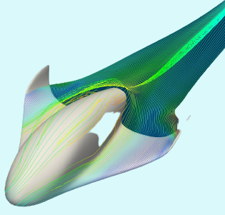
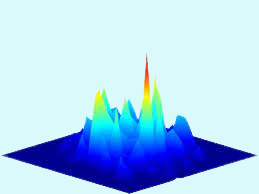

Pruthvi Utturwar
I'm M. Tech in Modelling and Simulation (DIAT, Pune)
with B.E. in Aeronautical(RTMNU Nagpur).
I'm passionate about classical physics
and applied mathematics.
As an Aerospace engineer, I have good knowledge of flight
mechanics,gas dynamics,fluid mechanics, aerodynamics.
I have good understanding of
mathematical modelling and numerical methods.
I'm profficient with programing languages c++, python and matlab
Experience
- 1 year Exp as Aeronautical Analyst
- 8 months Internship at Zeus Numerix as Research Intern
(Radar imaging, Signal Processing, UAV)
Projects
- ISAR Imaging simulated in Matlab
- Thermal Protection system design simulation in Python using FVM
- Lid Driven Cavity Flow Simulated in Matlab using FVM
- Freon -Oxygen Based semi-Cryogenic rocket fuel analysis for space vehicles
- Flexible wing concept design and Simulation in Ansys
- Dynamic Gravity model for orbit around the eart Simulated in Python
Skills
|
C++, Matlb, Python
|
SQL,HTML,CSS
|
CFD, FDM, FVM
|
|
Machine Learning, DATA Analytics
|
|
Numerical Methods, Mathematical Modelling
|